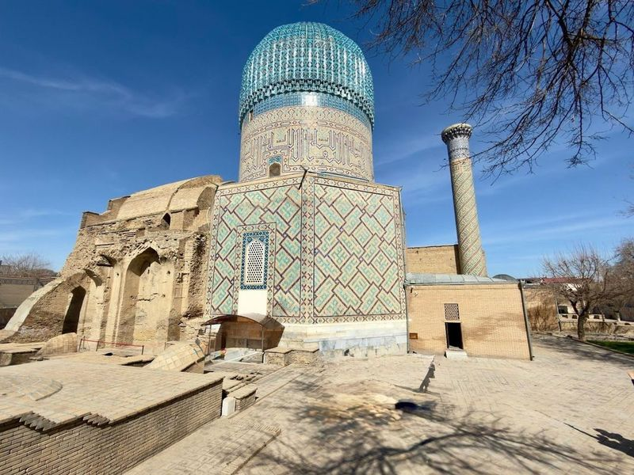
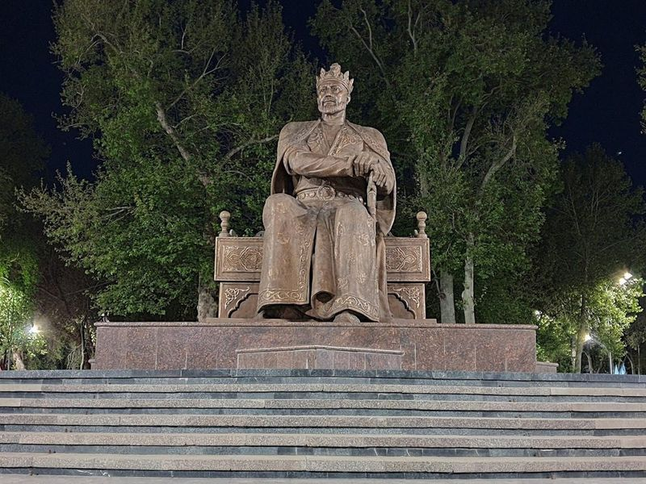
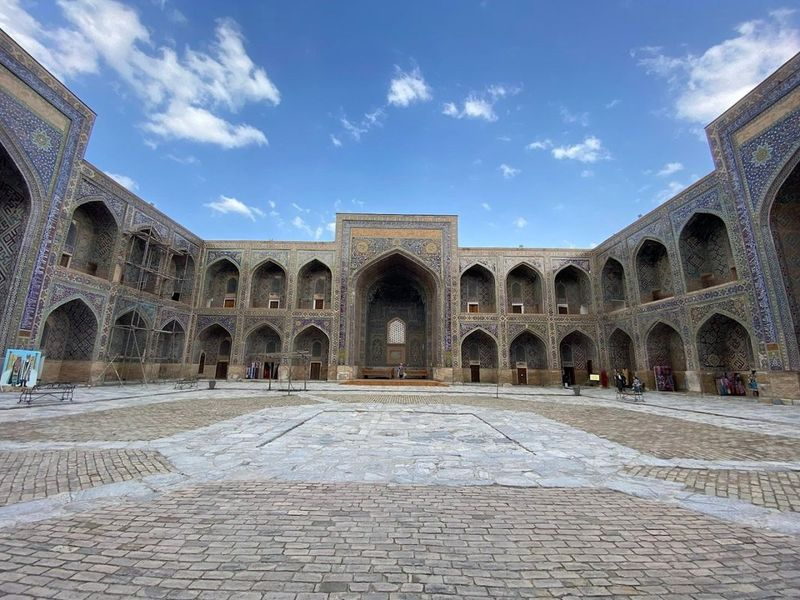
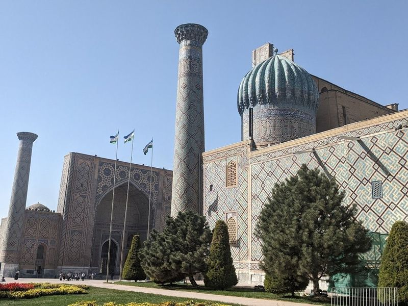
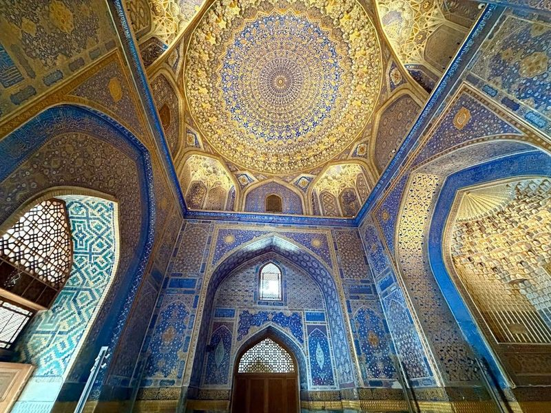
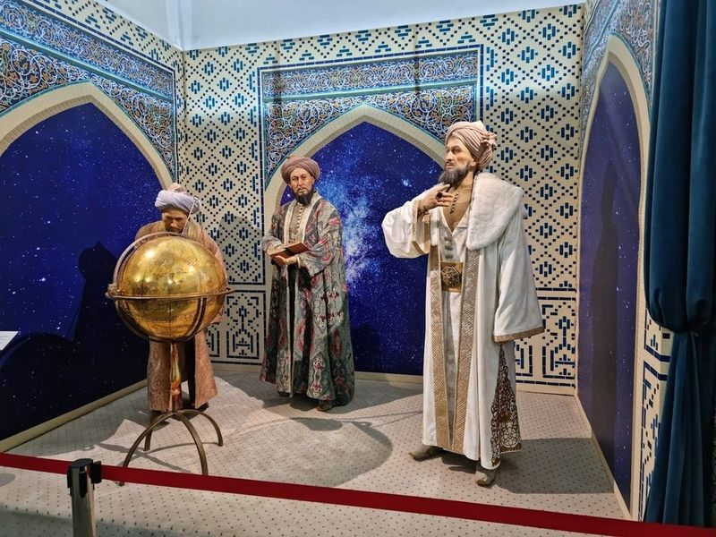
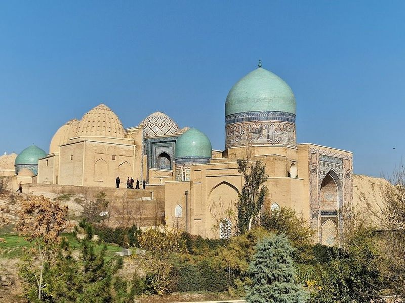
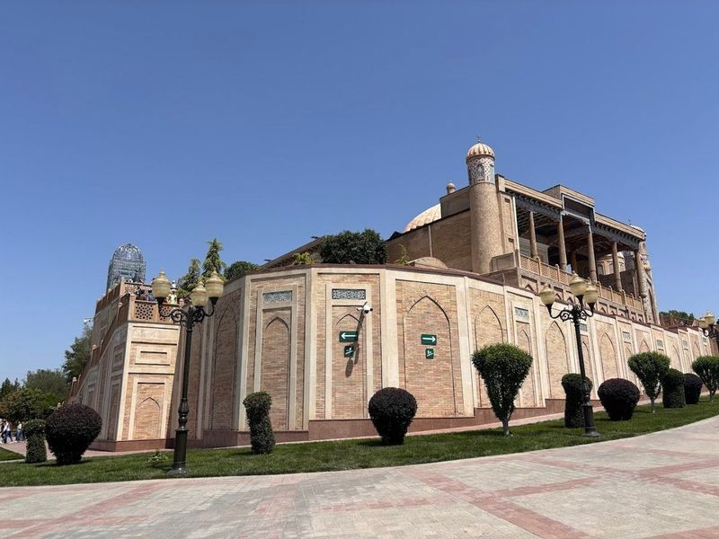
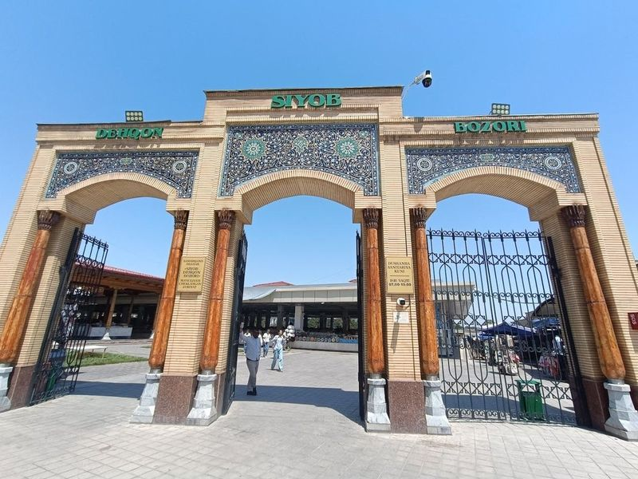
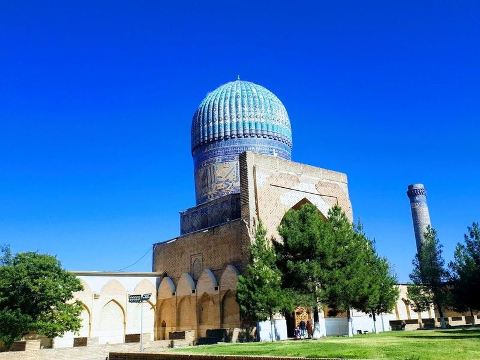

Explore Samarkand
A Brief History
Samarkand was a capital of Timur's empire in the 14th century and a major Silk Road hub linking China with Persia and the Mediterranean. The Registan ensemble, Bibi-Khanym Mosque, and Shah-i-Zinda necropolis display turquoise-tiled madrasas and observatories from Timurid and Ulug Beg's patronage. UNESCO-listed monuments record centuries of Islamic scholarship, caravan trade, and Uzbek national heritage.
Attractions Map
Top Sights & Activities

Amir Temur Mausoleum Gur-i Amir Сomplex
Amir Temur Mausoleum Gur-i Amir Complex is a 15th-century mausoleum in Samarkand, Uzbekistan, housing the tombs of Turko-Mongol conqueror Timur and his close relatives. The mausoleum's striking turquoise cupola, glazed bricks, and lavish marble designs make it recognizable landmarks in Uzbekistan. Despite not intending to be buried there, Timur now lies interred alongside his sons and grandson.

Amir Temur Monument
The Amir Temur Monument, located at a busy roundabout in Samarkand, is an impressive sight to behold. The giant-sized statue of Amir Temur stands at the center of the road and serves as a beautiful landmark at the entrance of Rukhobod historical landmark and Amir Temur complex. Tourists often gather here to take photos before embarking on their journey through the city's historical sites.

Registan Square
Registan Square, also known as the 'Sandy Place,' is a historic public square in Samarkand, Uzbekistan. It features three madrasas built between the 15th and 17th centuries. The city has preserved ancient crafts like embroidery, gold embroidery, silk weaving, copper engraving, ceramics, wood carving and painting.

Sherdor Madrasa
The Sher Dor Madrassah is a 17th-century monument located at the Registan in Uzbekistan. This ornate madrassa is adorned with intricate tile work and features impressive tiger mosaics. It forms part of a grand ensemble alongside the Tilya Kori Madrassah and the Ulugh Beg Madrassah, creating a magnificent sight at the vast open space.

Tilya-Kori Madrasa
Tilya-Kori Madrasah, completed in 1660, is a grand structure adorned with gold and intricate decorative patterns. It is part of the Registan Square complex, which was once a bustling trade center in the 15th-16th Century. The madrasah features an impressive 2-storey outer wall with facade and a magnificent dome covered in turquoise tiles. Its courtyard houses a beautiful mosque.

Ulugh Beg Madrasa
The Ulugh Beg Madrasa, also known as Ulugbek Madrasah, is a historic educational institution located in Registan Square in Samarkand. Built between 1417 and 1430 by Ulugh Beg, the grandson of Amir Timur, it is the oldest surviving piece of architecture in the square. Unlike traditional madrasas, this center of learning focused on mathematics, philosophy, theology, and astronomy due to Ulugh Beg's interests.

Shah-i-Zinda necropolis
Shah-i-Zinda is a mausoleum complex in Samarkand, Uzbekistan. The site features ornately decorated tombs and ancient mosaic-tiled mausoleums, some of which are the final resting places of anonymous individuals. The narrow lanes between the mausoleums offer a memorable experience as you explore this necropolis.

Hazrat Khizr Mosque
The Hazrat Khizr Mosque, also known as the Khizr Khan Mosque, is a revered Islamic site in Samarkand, Uzbekistan. It is named after Khizr, a legendary figure associated with water and symbolizing eternal life. The mosque has undergone reconstructions and renovations over the centuries but still holds its spiritual significance for devout Muslims. Situated near Shah-Zinda and Bibi-Khanym, it offers views of the surrounding landmarks from its minaret.

Siyob Bozori
Siyob Bozor, the largest bazaar in Uzbekistan, is located next to the Bibi Khanym mosque and offers a vibrant and bustling atmosphere. Visitors can explore colorful stalls filled with specialty breads, nuts, dried fruits, spices, and household goods. The market is a treasure trove of local flavors, crafts, and culture where tourists can find souvenirs like wooden clothes, carpets, artisan gifts, sweets, dry fruits, small packets of spices and traditional Uzbek outfits.

Bibi-Khanym Mosque
The Bibi-Khanym Mosque is a vast and partially restored 1400s mosque with a striking blue-tiled dome, making it notable landmarks in Samarkand. The city offers a glimpse into its rich history through attractions like the Registan Square, Gur-e-Amir mausoleum, Shah-Zinda necropolis, and Ulugbek Observatory. Visitors can also explore the vibrant Siab Bazaar to sample local delicacies and shop for traditional crafts.